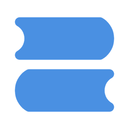

自定义名称、周期、目录与主题的新闻报告浏览器。支持 HTML、Markdown、纯文本，自动识别文件格式。
一切皆可定制，完全属于您的报告浏览器
App 名称自由设定，不限于科技新闻，任何报告都能用
日报、周报、月报一键切换，所有界面文字自动跟随
任意选择本地文件夹，自动扫描并识别文件命名格式
内置暗色与亮色双主题，一键切换，设置自动保存
HTML、Markdown、纯文本均可预览，自动识别渲染
选择目录后自动识别文件命名格式，无需手动配置
简洁高效的浏览体验
macOS 原生应用，即开即用
支持 macOS 13+ · 版本 v0.1.0 · 查看所有版本